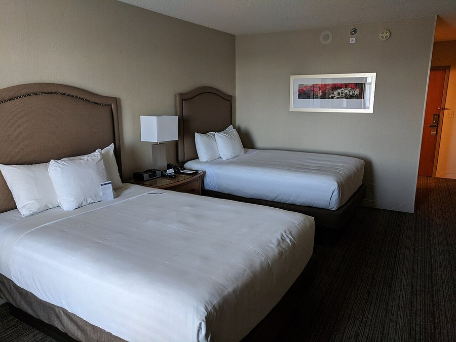

Why You Wake Up Tired After 8 Hours of Sleep
Clocking 8 hours in bed is supposed to be the fix. When you still wake up tired after 8 hours, the real problem usually isn't how long you slept, but how well.

Key takeaways
- Sleep quality matters more than hours logged. Eight hours of fragmented, shallow sleep can leave you more tired than six hours of solid, uninterrupted sleep.
- Sleep apnea is one of the most common, and most missed, causes of waking up tired despite a long night in bed.
- Alcohol, late caffeine and screens before bed all reduce deep and REM sleep without necessarily waking you up or shortening the night.
- Sleep inertia is normal for the first 15 to 30 minutes after waking, but it shouldn't linger through most of your morning.
- A mismatched sleep schedule, going to bed and waking at inconsistent times, can undercut 8 hours just as much as sleep loss does.
Waking up tired after 8 hours of sleep usually means something is cutting into sleep quality, not sleep quantity. The most common culprits are fragmented or shallow sleep stages, undiagnosed sleep apnea, a sleep schedule that fights your body clock, and evening habits like alcohol, late caffeine or screens that quietly erode deep sleep. A doctor or sleep study can rule out a medical cause if it persists.
Eight hours is the number everyone's told to hit, so it's genuinely frustrating when you hit it and still drag through the morning. Here's what's actually going on, and how to tell which explanation fits you.
What does it mean if you wake up tired after a full 8 hours?
It means your total time in bed and your actual sleep quality aren't the same thing. Sleep happens in cycles of roughly 90 minutes, moving through light sleep, deep sleep and REM sleep. The restorative part, deep sleep and REM, can get squeezed out by stress, alcohol, noise or an undiagnosed breathing issue even while you're technically asleep for 8 hours straight. You can log a full night on a tracker and still wake up feeling like you barely slept, because the stages that matter most got shortchanged.
Could you be getting less deep sleep than you think?
Very possibly. Deep sleep, the stage most tied to feeling physically rested, naturally declines with stress, alcohol and age. A sleep tracker that shows "8 hours asleep" is measuring time in bed with reduced movement, not necessarily deep, uninterrupted sleep. Frequent brief awakenings, the kind you don't even remember the next day, can fragment the night enough to blunt the restorative stages without ever showing up as "waking up" on a basic tracker.
Is undiagnosed sleep apnea causing you to wake up tired?
It's one of the most common reasons, and one of the easiest to miss. Obstructive sleep apnea causes the airway to partially or fully collapse repeatedly during the night, each time triggering a brief, often unremembered awakening to resume breathing. Someone can have dozens of these episodes an hour and have no memory of waking at all, just the result: 8 hours in bed, and exhaustion the next day. Loud snoring, gasping, morning headaches and a dry mouth are common clues, though some people, especially women, have none of these and still have it.
Does your sleep schedule consistency matter more than total hours?
For a lot of people, yes. Going to bed and waking up at wildly different times from one day to the next confuses your circadian rhythm, the internal clock that times hormone release, body temperature and alertness. Sleeping 8 hours from 2 a.m. to 10 a.m. on a weekend after five weeknights of 11 p.m. to 7 a.m. isn't the same as 8 consistent hours. The body ends up partly fighting its own clock, which shows up as grogginess even though the hour count looks fine on paper.
| If you also notice… | Possible cause | What tends to help |
|---|---|---|
| Loud snoring, gasping, morning headache | Sleep apnea | Talk to a doctor about a sleep study |
| Fine on weekdays, worse after late weekends | Inconsistent schedule | Same wake time every day, weekends included |
| Groggy only in the first 20-30 minutes | Normal sleep inertia | Light, movement, avoid snoozing repeatedly |
| Wired at night, tired all day | Late caffeine or screens | Cut caffeine after midday, dim screens before bed |
| Tired plus cold hands, hair thinning, weight change | Thyroid or iron issue | Ask your doctor for bloodwork |
| Restless legs or needing to move legs at night | Restless legs syndrome | Check iron levels; mention it to a doctor |
Could alcohol, late caffeine or screens be wrecking your sleep quality?
Yes, and this is the explanation people most often rule out too quickly because "I slept 8 hours." Alcohol helps you fall asleep faster but fragments sleep in the second half of the night and suppresses REM sleep, so you can be in bed for 8 hours and still lose a meaningful chunk of restorative sleep. Caffeine has a half-life of roughly 5 to 6 hours, so a 3 p.m. coffee can still be affecting your system at bedtime even if you don't feel "wired." Blue light from phones and laptops delays the release of melatonin, pushing your body's sense of nighttime later than the clock says.
None of these necessarily shorten the number of hours you're asleep. They change the composition of those hours, trading deep and REM sleep for lighter, more easily disrupted stages, which is exactly the kind of change a tracker's hour count won't catch.
What role does sleep inertia play in morning tiredness?
Sleep inertia is the grogginess everyone feels for a short window right after waking, caused by the brain's sudden transition out of sleep. It's normal and usually fades within 15 to 30 minutes. It gets worse, and can stretch toward an hour, when an alarm pulls you out of deep sleep specifically, which is more likely if your sleep schedule is already inconsistent or if you're sleep-deprived overall. If grogginess genuinely persists for hours, well past the inertia window, that's a sign something else, not inertia, is the real cause.
Could an underlying health condition explain it?
Sometimes. Hypothyroidism, iron-deficiency anemia, depression, chronic pain and restless legs syndrome are all linked to waking up tired regardless of how long you were in bed. Certain medications, including some blood pressure drugs and antihistamines, can also leave people feeling groggy the next morning. None of these are things to self-diagnose from a list, but if persistent morning fatigue comes with other symptoms, cold intolerance, unexplained weight change, mood changes, it's worth mentioning the whole picture to a doctor rather than assuming it's "just sleep."
How can you tell if it's time to see a doctor?
See a doctor if you wake up tired most days despite consistently getting 7 to 9 hours, if you snore loudly or have been told you stop breathing at night, if daytime sleepiness is affecting driving or work, or if the fatigue has lasted more than a few weeks without an obvious cause like a stressful stretch or travel. A sleep study, done at a clinic or increasingly at home, is the standard way to check for sleep apnea and a handful of other sleep disorders that a tracker or a quick self-check can't diagnose.
What can you do tonight to wake up more refreshed?
- Keep the same wake time every day, including weekends, rather than only watching total hours.
- Stop caffeine by early afternoon and limit alcohol, especially within 3 hours of bed.
- Dim screens or switch to night mode for the last hour before sleep.
- Keep the bedroom cool, dark and quiet; a consistent environment supports deeper sleep stages.
- Get outside for daylight soon after waking; it helps anchor your circadian rhythm for the following night.
If fatigue is affecting more than just your mornings, our sleep hygiene checklist covers the full list of habits worth auditing, and is 6 hours of sleep enough? tackles the opposite question for anyone cutting hours short on purpose.
Does poor sleep quality actually affect your brain the next day?
Yes, measurably. Sleep that's long enough but low in deep and REM stages still impairs attention, working memory and mood the next day, in ways that feel a lot like "just being tired" but trace back to specific sleep stages getting shortchanged overnight. If brain fog and forgetfulness are part of what you're noticing, our guide to brain fog: causes and how to clear it covers the overlap between poor sleep and daytime thinking problems in more depth.
Waking up at a consistent time, cutting back on evening alcohol and caffeine, and ruling out sleep apnea with a doctor cover the large majority of cases. If you've tried the obvious fixes and still wake up tired after a full 8 hours, that persistence itself is useful information. It's a reason to get checked, not a reason to assume you're broken.
Frequently asked questions
Is it normal to feel tired after 8 hours of sleep?
Occasionally, yes, especially right at the moment you wake up. But feeling genuinely groggy and low-energy for most of the day, most days, after a full 8 hours is not something to shrug off. It usually points to fragmented sleep, a mismatched schedule or an underlying issue worth checking.
Can waking up tired mean a vitamin deficiency?
It can be a contributing factor. Low iron, vitamin D or B12 are all linked to fatigue, including morning tiredness. A simple blood panel can rule these out, but they're rarely the whole story if your actual sleep is fragmented or short on deep stages.
Does sleep apnea always include loud snoring?
No. Snoring is a common sign, but some people with sleep apnea, especially women and people with milder cases, snore quietly or not at all. Morning headaches, a dry mouth and persistent daytime sleepiness can show up without anyone hearing you snore.
How long does sleep inertia usually last?
Typically 15 to 30 minutes for most people, though it can stretch to an hour or more if you're woken from deep sleep or are already sleep-deprived. Light, movement and avoiding the snooze button all tend to shorten it.
Will drinking coffee right away fix morning tiredness?
It can mask the feeling for an hour or two, but caffeine doesn't resolve the underlying cause. If you need coffee every single morning just to function after what should be adequate sleep, that's a signal to look at sleep quality, not just a habit to keep.
Can a nap make up for poor nighttime sleep?
A short nap, 20 to 30 minutes, can take the edge off daytime sleepiness, but it doesn't replace the deep and REM sleep your body missed overnight. Long or late naps can also make it harder to fall asleep the next night, deepening the cycle.
When should I get a sleep study?
Consider one if you wake up tired most days despite 7 to 9 hours in bed, snore loudly, have been told you stop breathing during sleep, or feel sleepy enough during the day that it affects driving or work. A doctor can refer you to a sleep clinic.
Related: Sleep hygiene checklist · Waking up at 3 AM: causes · Is 6 hours of sleep enough? · Brain fog: causes and fixes